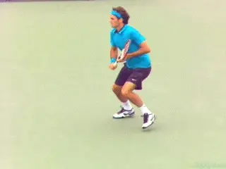
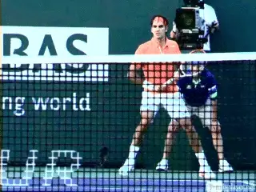
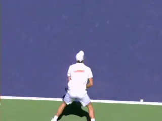
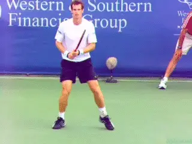
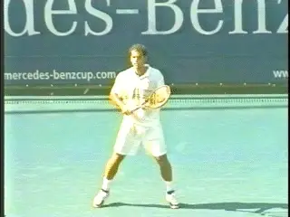
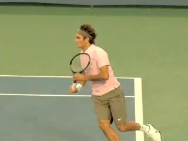
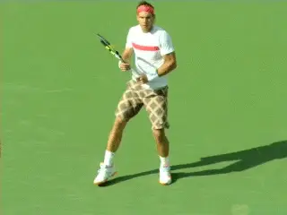
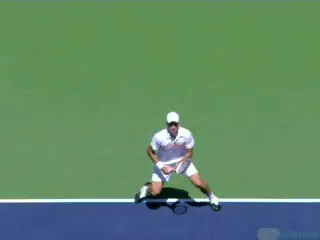

Previous: My Unit Turn Revelation | 🏠 Famous Coaches Home | Next: Learning from the Pros
The framework a new paradigm for technique and movement
Comprehensive unified tennis knowledge base — Fundamentals, Stroke Analysis, Reference Library, and more
The Framework: A New Paradigm for Technique and Movement
Tim Mayotte

Great coaching leads to flowing, sublime moments.
Where great teaching lives, tennis thrives.
Our beautiful sport flourishes where there are great coaches. Learning from a master coach is perhaps the most valuable gift a player and a community of players ever receives.
This is true in the usual havens, but also in the unexpected. Excellence in teaching grows the game in South Florida and in Los Angeles, but superb coaching also springs forth in the inner city of Boston, in Grand Rapids, Michigan, in Rogers, Arkansas, in Springfield, Massachusetts, and in the many corners of the country and world where a smart and curious person mines the secrets of our sport.
Great coaches lead us to cohesion, balance. They lead us to those sublime moments when we instantly react to a good shot with a better one: the flowing one-hander down the line, or a lunge volley to win a big point. Mastery in real time.
The freedom and power of a newly improved shot seeds an unexpectedly profound passion. The memory of this found fluidity echoes and reverberates. Visceral images revisit us throughout our day and when our eyes are closed.
Guiding a youngster towards perfection brings goose bumps up on the back of one's neck. Sharing the moments of change with an avid adult makes a coach grow young. When a group of players feels this kind of impact, tennis grows. Our sport and its players crave more superb teachers.

Technique and movement are inexorably interwoven.
This article series is dedicated to all those coaches yearning to become better as they strive to instill their players with the pure joy of improving. And to the players who are avid students of the game as well.
Great coaching and teaching requires tending to a myriad of skills that must be developed, sculpted and polished. Tactics, physical training, and mental training comprise just a short list.
We coaches must learn as much as we can about these and more, but in these articles, I am focused on the teaching of technique and movement. I believe players are best served when technique and movement are seen as inexorably interwoven.
Anyone who has tried to analyze and teach technique and movement and is really honest with themselves knows just how wonderfully complex it is. Getting a hold, so to speak, of an activity with so many moving pieces makes us shake our heads as we yearn to find an elusive center. I think many of us have had the following experiences.
You are sure you know what is wrong with a player's game. She is an intermediate with some proficiency.

A clean open stance backhand going back. But unlike Novak, some players cannot create the same mastery in all directions.
When doing simple hand-feeding or racquet feeding the stroke looks better. The swing finds a better length. Loading is fuller. Contact point cleans up. But as soon as the practice goes to live ball and the player begins to deal with the complications of real play, the seemingly remedied issue comes back.
You revisit the fixes. For a few moments all seems better, but then the problems return and haunt your student and you.
Another player, relatively high level, can hit a wonderful, clean open stance backhand consistently going back to her left, but she is clumsy coming forward on a high backhand put away. No matter how much you slow down and analyze the video, you struggle to see why one is so good and the other so weak.
Your student is a young boy, skinny arms and chicken legs. He has good hand-eye, the outlines of acceptable strokes, but overall his game lacks organization.
There is something sloppy, messy. He's a sort of baby octopus. Figuring out where to start is surprisingly complicated and elusive.

What is needed: an approach that sees technique and movement as parts of a whole.
Confronting these and other similar situation through the earlier parts of my teaching career I would be forced to admit how little I knew. Available teaching tools rarely proved useful. What I found at conferences, in books and on-line was an ever-expanding number of educational sources.
Some was very sophisticated, informative, but seemed to be written for tennis Ph'ds. More accessible information was lacking or simplistic.
The technically orientated lessons and sites broke down the basics of individual strokes and then informed the lessons with some "thinking du jour." This included clichéd phrases such as "Low to High," "Kinetic chain," "Loading," "Windshield wiper," and "Modern Tennis" in the avalanche of terms.
But only a small portion of these more accessible sources teachers and books analyzed movement, but those sources did so in a rather basic fashion---open and closed stance, simple footwork patterns etc. All this flood of information sometimes helped, but only in small ways, around the edges. I was frustrated that coaches often made simplistic statements such as "move your feet," but I had no idea what that meant or how it could help players.
The closer I looked, the complications and enormous variety of problems overwhelmed my ability to address them in an organized way. I came to that when I focused on technique a sort of black hole would open that could only be closed if movement was included in the equation. Then as I followed the movement of a shot questions about technique would (to my immense frustration) reappear.
It was not only my frustrations as a teacher that egged me on. I was constantly nudged by memories of playing the greats.

Memories of playing the greats—beauty and anguish.
I could still feel and see the beauty (and anguish) of Pete Sampras sprinting to a forehand passing shot and nearly knocking the racquet of out of my hand at 7 all in the fifth set in a match at the Australian Open. Or I wonder still how was it that Mats Wilander was on balance to hit a top spin lob winner after I had him on full stretch on the volley I hit a split second before.
I had happier memories of me exploding to a forehand volley, knifing it down the line and then taking an aggressive angle on the recovery to hit a winning volley off of Michael Chang in the 5th set at a match at Wimbledon.
I could sense how movement and technique help or hurt each other. But how could this be explained fully enough to help explain the many conundrums of playing and teaching?
What I came to see was that what was needed was an accurate, disciplined, accessible approach to analyze technique and movement as parts of a whole. Now after years, I have arrived at that methodology, what I call The Framework.
Basics
I have always been surprised when a coach says he specializes in one stroke. Instead of relying on the commonly used categories such as forehand, backhand, forehand volley etc. I have worked to establish and label the most salient elements contained in all shots.

We need to see more clearly what goes on in all shots—including slice.
By analyzing a shot using these guidelines or Framework a coach can begin to see more clearly what is going on in a shot, in all shots including slices and volley.
In creating the Framework, therefore I have developed 4 rules.
Rule #1
Effective analysis of all shots must consider how movement to the ball and the movement of the racket are interwoven.
Identifying the elements that make up all shots, enables a coach to establish an organized method to diagnose strokes. This common framework sets up a skeleton from which to decide on a path forward.
The Framework begins with the assumption that swing shapes and movement are interwoven; one significantly impacts the other and visa versa. I believe the separation between swing shape and movement to and from the ball is artificial and unhelpful.
In simple terms a stroke is not a shot. "The Framework" assumes that an effective analysis of a shot, any shot, must look at the shot from start to finish, from split-step to recovery.
The higher the player's level the more important it is to analyze how technique and movement support or work against each other. (For the purposes of these articles, we are excluding the serve.)
Great technique/movement is built on the minimum number of possible variables--without sacrificing racquet speed or foot speed. In fact this reduction of variables actually increases both.

The Framework evaluates the quality of 7 stages in every shot.
Rule #2
The Framework is based on the assumption that every shot is a succession of stages built one upon the other. The Framework breaks down each shot into seven stages or sections. This creates parameters that allows us to define a range from acceptable and unacceptable.
Rule #3
The Framework focuses on the importance of the continuous powerful and smooth transfer of energy and momentum through the whole shot. Most educational sites focus on momentum and the kinetic chain in the stroke only. The Framework analyzes how energy is used during movement and how that energy is transferred from movement to the racquet and back to movement.
Rule #4
The Framework works with the premise that great technique/movement eliminates as many variables as possible without sacrificing racquet and foot speed. In fact eliminating variables will increase both.
THE SEVEN STAGES:
Movement
Technique
Split Step
Unit Turn
Footwork Pattern
Loading
Unloading
End of Rotation
Recovery
Ready Position
Grip Change (When Needed)
Loop or Take Back
Pull Position
Contact
Finish
Ready Position
So let's outline the stages in preparation for jumping into detail in the upcoming articles in this series. We will revisit them in as we work through how the function within great shot making. But here is a first look. Note that each of the seven stages has a movement component paired with a technique component.

Each stage combines a movement component and a technical component.
As we will see, The Framework enables and encourages teachers to see the first stage at which a shot breaks down. By improving the earliest stage, then improving the rest, the game becomes much easier for coach and player.
By closely examining these two inseparable elements of movement and racket as they unfold together stage by stage I have found a comprehensive methodology that works for me for diagnosing and fixing problems.
But, as exciting as I have found this approach, I note that it can never guarantee mastery or success. Teaching tennis is humbling to say the least. The mysterious mix of what to introduce when and how to develop it will always be a mystery, an alchemy of the mental, physical, emotional, and even spiritual dimensions.
Having said that, in the coming chapters I will try to see how the 4 rules and 7 stages provide and effective framework to analyzing and teaching better tennis.
Benefits of the Framework
In my experience "The Framework" has the following benefits that are not as readily obvious in many other methods.
It allows you to recognize that a significant portion of shots that are subpar are significantly compromised well before the player begins their stroke. If the preparation and first step movement are poor there is little chance of being able to hit the ball well, even if your forehand looks just like Federer’s when you are hand fed a ball. To put it in a more positive vein, for most beginners, intermediate and even high level players many shots can be helped greatly by fixing the early stages of the shot. Every shot can best seen be as a building of stages, each on top of the other. The building cannot be great without great execution of the foundational stages.
The Framework offers a basic model that can be continuously developed with increasing nuance. This skeleton allows the coach to be able to put all the extremely sophisticated work being done into perspective thereby making it more easily understandable as to how it applies.
The Framework pays close attention to the physical strengths and weaknesses of the player. If applied correctly a teacher can more fully coach in a developmentally sensitive way. This is helpful not only for children but also in working with adults of all levels.
The Framework makes scouting players easier. We can see how and why a player may be good at one forehand and not another. By looking at the movement with the swing path a teacher comes to understand that forehands are in fact vastly different depending on circumstance. Preparation and movement vary greatly bringing vastly different outcomes. A player may have a wonderful inside-out forehand. The goal is for a player to master all types of forehands, and of all shots.

Following a legendary professional playing career, Tim Mayotte is now focused on developing the best tennis training program in America. For 12 years, Tim has been training junior and young pro players in the Boston area and developing The Framework, his revolutionary teaching approach that unifies strokes and movement. As a college player at Stanford, Tim led his team to an NCAA title, winning the individual singles in 1981.
Tim won 13 ATP titles, was a semifinalist at Wimbledon and the Australian Open and won the Silver Medal at the Olympics in 1986. Tim has wins over virtually every top player of his era, including John McEnroe, Jimmy Connors, Stefan Edberg, Boris Becker, Andre Agassi, and Pete Sampras.
He is a former member of the ATP Board of Directors, a former President of the ATP Players Council, and was also a television commentator for 5 years on USA Network. A graduate of Stanford with a degree in history, he also holds a Masters Degree in psychology and theology from Union Theological Seminary.
Source: tennisplayer.net archive — The Framework - A New Paradigm for Technique and Movement.docx (John Yandell teaching library, 2002-2022). Extracted and rendered as HTML for Tennis Future Lab.